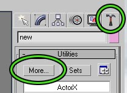
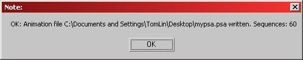

UDN
Search public documentation:
ActorXMaxTutorial
日本語訳
中国翻译
한국어
Interested in the Unreal Engine?
Visit the Unreal Technology site.
Looking for jobs and company info?
Check out the Epic games site.
Questions about support via UDN?
Contact the UDN Staff
中国翻译
한국어
Interested in the Unreal Engine?
Visit the Unreal Technology site.
Looking for jobs and company info?
Check out the Epic games site.
Questions about support via UDN?
Contact the UDN Staff
How to export animations using ActorX and Max
Document Summary: A tutorial showing how to export animations using ActorX with 3DS Max.Install the Plug-In
- Download the ActorX plug-in for Max and copy it to your plug-ins directory.
- Launch Max, and ActorX should load automatically. You can find it under the utilities tab. (If this is the first time you are using it, you'll find it when you click the more button)

If activating the plugin results in an error message - the most common one is "failed to initialize", verify your system is up to date with the latest Windows system updates, and download and install the latest Microsoft .Net framework update, available via http://www.microsoft.com/downloads ( choose .net in the download product/technology box and press [go]). If this doesn't fix it, get msvcr71.dll from the ActorX page and manually place it either in your windows\system32 folder or in the plug-ins folder alongside the ActorX plugin.Setting up your scene
Always make sure that everything in the scene belongs to a single hierarchy. Delete all placeholder objects and any other helper elements that are not part of the mesh. 3DS Max is very flexible as to what makes up a bone in a skeleton - by default, all regular bones as well as all proper parent-child relations linking geometry, dummies, and even point helpers (since ActorX plugin version 2.14) will be interpreted as skeletal bones by the exporter, as long as they make up a single hierarchy. Be aware of the axes and orientation: on export from Max, the Y-coordinates of the mesh get their sign flipped to comply with Unreal's handedness (relative orientation of axes.) So, if in Max, the Z axis is up, a character faces down the X axis, and the Y axis points into the screen away from the viewer, should turn into a mesh facing down X, Z being up, and Y pointing towards the viewer - provided no additional mesh properties like rotation or negative scalings are applied in the editor. Multiple materials can be used in the scene. They will end up as multiple material slots in the final mesh, and the order will be arbitrary by default, unless you force it by appending "skinXX" tags to the names of the materials - i.e., if the material names are Body and Head , renaming them to Body_Skin00 and Head_Skin01 will tell the exporter to obey that order when creating the .PSK file. You are free to use both individual and "multi-sub" materials. When using the latter, simply put the desired skin order tags on each sub material. This not only affects the order of slots for skeletal meshes, but can be used to influence rendering order as well.Export the skeleton and mesh
- Load a scene containing the actor you wish to export.
- Bring up the ActorX dialog by going to the utilities tab (see above) and opening ActorX.
- Fill in the various fields as follows:
- Output folder: enter the name of the directory where you wish to save the .PSK file. We recommend putting an "Unreal Files" directory under your actor's folder. The browse button is very useful here.
- Mesh file name: enter the name for the .PSK file. We recommend the name of your actor.
- Click the "Save mesh/refpose button. You can do this with any frame of the animation. It is recommended that your model's reference pose be in a relaxed, spread eagle pose for ease of use.
 After you save the mesh/refpose, a few windows will pop up if all went well.
After you save the mesh/refpose, a few windows will pop up if all went well.

Export your animations
There are two steps for exporting animations. First, load the scene containing your animation(s) and "digest" an animation to read it into memory. Repeat for as many animations as you would like to export this session. Second, add these new animations to a PSA file and save it back out.Digest an animation
- Load the file containing the animation you wish to export.
- Bring up the ActorX dialog by opening the utilities tab, and opening the ActorX option. (You may have to click the `more' button, as described above)
- Fill in the various fields as follows:
- Output folder: same as for skeleton/mesh above.
- Animation file name: we recommend the same as the mesh file name (they will have a different extension to help you tell them apart). Enter the name of your existing .PSA file if you wish to add this animation to that existing .PSA
- Animation sequence name: put the name you want your animation to have within the .PSA file.
- Animation range: specify the frames in the current scene that define this animation. (Format is `4-45'; number, hyphen, number)

- Make sure that the range slider and the time slider show 0 as the first frame. (Note: this is a superstitious behavior on our part to avoid a periodic crashing bug in ActorX. Skip this step at your own peril)
- Click Digest Animation. When it is done, you will not get a window telling you that it was/was not successful.
- Repeat steps 1-5 for as many animations as you would like to export this session. We recommend not trying to do too many at once in case ActorX crashes and you have to start over.
Add your animations to a .PSA file
Once you have digested one or more animations you are ready to add them to a .PSA file.
- Bring up the ActorX dialog if it is not already displayed.
- Click the animation manager button to display the animation manager.
- If you are adding your animations to an existing .PSA file, click Load to load the .PSA file. (assumes that you already provided the name of the animation file in step 3b of the previous section. If not, then use the _Load As...... button)
- On the left in the animations list you should see the animations that you have just digested. On the right you will see any animations that already exist in the .PSA file. This will be empty if you are creating a new .PSA file.
- Select your new animations and click --> to add your animations to the output package.
- Click Save to save the .PSA file back out. (assumes you already provided the name of the animation file previously)

Batch Processing
As the list of animations for each character grows the process for creating the .PSA files starts to take a very long time. In order to simplify this process you can have ActorX process all of the animations in a given folder in one step.Preparing your animations
Before batch-processing you will need to format your animations.- They will need to be in .max file format
- All of the animations that are to be processed together need to reside in a single directory
- Each file must have its start and end time set properly. Click the Time Configuration button
 in 3D-Studio to set this up properly.
in 3D-Studio to set this up properly.
- The files should have the same name as the desired animation name once in the engine.
Exporting the animations
Once your animations are properly setup follow these steps to export them all to a .PSA file.- Fill in the Output Folder field in ActorX with the desired location of the .PSA file
- Fill in the Animation File Name field with the desired name of the .PSA file.
- In the Actor X - Setup section of the tool, check cull unused dummies.
- Also in the Actor X - Setup section click Process all Animations. ActorX will prompt you for the folder where all of the animations reside. Select the folder and click Okay.
- Now that the animations have been imported click Animation Manager which will open the Animation Manager window (see above). The left list is all the animations you have digested thus far. The right column is the list of animations that exist in the .PSA file you selected in the Animation File Name field.
- Select the animations you which to export from the left column and click the Copy ==> button, to copy them into the area where the .PSA animations reside.
- Click Save. The .PSA file will be created.
Additional ActorX options
You may have noticed that there are a wealth of options underneath the animation manager button, in the `ActorX - Setup' section. We'll step through them in order.Persistent Settings and Paths
These two options are fairly self explanatory; when checked, they will keep your settings in the fields above them, so that you won't have to re-enter them every time you want to export a mesh or an animation.Skin Export
These options will determine what conditions need to be filled in deciding the exported geometry/animation.All Skin-Type
If this is checked, every mesh in the file that has a skin/physique modifier on it will be exported. This option MUST be checked if you have any deformable skin in your scene. If unchecked, all meshes will be assumed to be rigid, controlled by a single bone each.All Textured
All geometry that has a texture on it will be exported.All Selected
All geometry that is currently selected will be exported. The invert checkbox will export all geometry that is not selected.Force Reference Pose T=0
This option will force the use of the pose at T=0 as the reference pose. Only useful in case you're exporting your PSK from a file that also has animation at other frames, and somehow the first frame of the slider isn't frame 0 in the animation. By default, the engine will use the first frame of the active slider range for exporting the PSK file, which is why we recommend that frame 0 is part of the active range. In general, you should always export your PSK from a known, specially posed, static reference pose, so there is no potential for exporting a random pose as your reference pose.Tangent UV Splits
Always leave this option off. Otherwise, ignore this option.Bake Smoothing Groups
Smoothing on skeletal models is handled somewhat strangely in UnrealEd. If you try to put smoothing groups on a character model, the exporter will break your model along the edge of the groups, and make that section its own separate piece. This process involves dividing vertices along smoothed edges. It will then attempt to smooth the individual piece by itself, although it will still appear to be part of a larger `connected' mesh. In other words, in exchange for smoothing, you will increase your vertex count. The more smoothing groups you have, the more vertices you will have. Therefore, smoothing groups are discouraged on skeletal models; it is recommended that you leave this option unchecked.Bones
Cull Unused Dummies
If you are using dummies at the ends of your bone chains, this option will remove them for memory savings.Cull Root Dummy
This option is disabled.Motion
Fix Root Net Motion
If your model is animated such that the root bone moves, this option gives you the opportunity to disable that motion. Meaning, if you create a run cycle in Max that translates forward, this option will make it look as if the model is running in place in UnrealEd.Hard Lock
Ignore this option.Logfiles/No Log Files
This is pretty self-explanatory. These are just a convenient source for people to check if they suspect something isn't exporting correctly. You can find a variety of information here; bones list with heirarcy information, vertex/face/frame numbers and material # slots etc. Besides verifying that the skeletal and skin data exported as expected, you would want to look at these for example if you want to know what the internal name of the bones are, for using bone controllers or attachments.Script Template
UnrealScript? used to be necessary to import models and animations into Unreal. Thankfully, this is no longer true. Unless you know what you are doing with these fields, ignore them.Batch exporting using MaxScript
With revision 2.18 of the plug-in, all major export commands and switches are exposed as MaxScript commands. You can use scripts to automate repetitive tasks, like saving out large numbers of animation sequences from several files. The commands are explained in detail in this MaxScript example file. For the sake of uninterrupted batch processing, usage of the exporter's commands from MaxScript will suppress all the usual ActorX confirmation dialogs and pop-ups, except for errors, which will halt the script.Troubleshooting
"Unmatched Node ID" warning
A frequently encountered issue is the "Unmatched node ID" warning. It means there is mesh geometry in the scene that the exporter cannot associate with a bone. For example a piece of mesh that is not properly linked to the main hierarchy, but which has a Physique or Skin modifier on it. As outlined above in the setup notes, everything in the scene must belong to a single, tree-like hierarchy where all bones and all objects acting as bones eventually link down to the root bone/root object of the skeleton. Make sure there is no accidental texturing on any biped or dummy 'helper' geometry, and if you don't need it (when all your skins are purely Physique or Max skins) uncheck the 'all textured' option under "Skin Export" in the ActorX setup panel."Invalid number of physique bone influences" warning
Usually this indicates a mesh vertex has one or more bones influencing it, but they have invalid - probably zero - weights. Try manual adjustment of the (physique or skin modifier) weights; if not possible, redo the mesh's skinning setup.Downloads
- ActorXMaxScriptExample.ms: Example MaxScript? file for export automation.